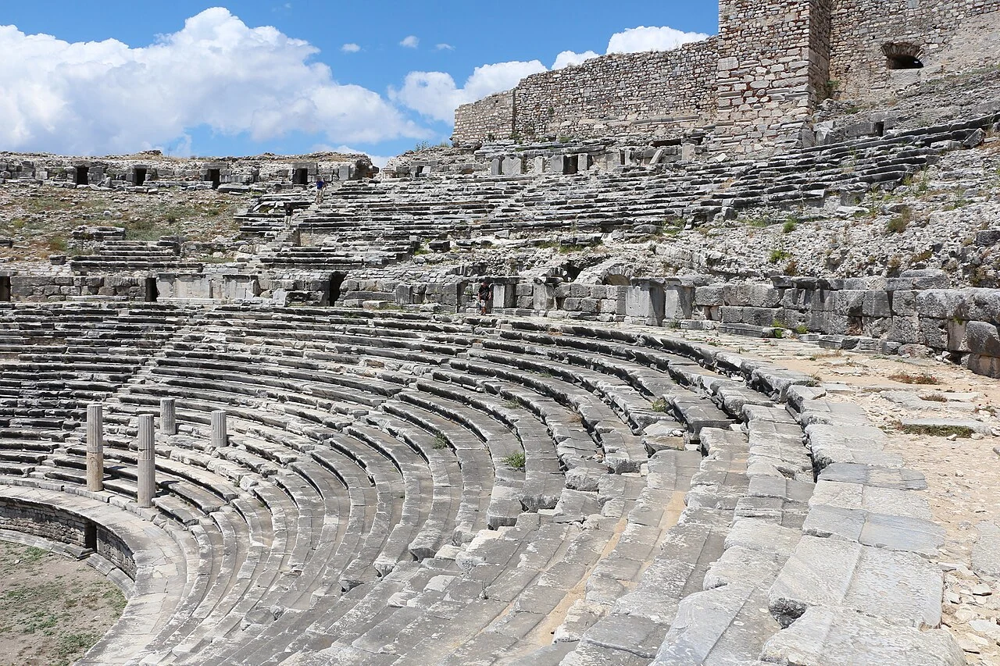

Felsefe tarihini yalnızca Antik Yunan’dan başlayıp Avrupa’ya uzanan tek bir çizgi gibi anlatmak, insanlığın düşünsel mirasının büyük bölümünü görünmez kılar. Farklı toplumlarda insanlar dünyanın nasıl işlediğini, doğru davranışın ne olduğunu, acıdan nasıl kurtulunacağını ve adil bir yönetimin nasıl kurulacağını tartıştı. Bu fikirler kimi zaman yazılı metinlerde, kimi zaman sözlü aktarımda, yorumlarda, tartışma okullarında ve gündelik uygulamalarda yaşadı.
“Dünya felsefesi” tek bir liste değildir
Her kültürün aynı soruları aynı sırayla sorduğu, bütün düşünürlerin birbirini doğrudan etkilediği küresel bir felsefe kanonu yoktur. “Felsefe” sözcüğü ve üniversitelerdeki disiplin sınırları da tarih içinde değişti. Bu yazıda farklı bölgelerden etkili örneklere bakıyoruz; onları tek bir düşünce sistemine indirgemek veya tüm bir kıtanın görüşü gibi sunmak amacında değiliz.
Kaynakların korunma biçimi de anlatıyı etkiler. Yazılı metinlerin yoğun biçimde saklandığı toplumların düşünürlerini daha kolay izleyebiliriz; sözlü gelenekler ve sömürgecilik döneminde kayda alınmamış bilgi biçimleri ise arşivlerde daha az görünür olabilir. Bu fark, bir topluluğun felsefi düşüncesi olmadığı anlamına gelmez; tarihçinin hangi kanıtlarla çalışabildiğini gösterir.
Hindistan: benlik, bilgi ve kurtuluş
Hint düşünce tarihi tek bir “Hindu felsefesi”nden oluşmaz. Vedalar ve Upanişadlar çevresindeki metinlerden gelişen Nyāya, Vaiśeṣika, Sāṃkhya, Yoga, Mīmāṃsā ve Vedānta gibi okullar; bilginin kaynakları, benlik, evren ve özgürleşme üzerine farklı açıklamalar üretti. Bu okullar kendi içlerinde de ayrıştı ve yüzyıllar boyunca birbirleriyle tartıştı.
Buda’nın öğretileriyle bağlantılı Budist gelenekler ve Jain düşüncesi, Vedaların otoritesini kabul etmeyen başka felsefi yollar açtı. Acı, eylem, yeniden doğuş, benlik ve kurtuluşa dair görüşleri birbirinin aynısı değildi; Hindistan’daki düşünürler bu konuları mantık ve bilgi kuramı üzerinden de tartıştı. Nalanda gibi öğrenim merkezleri, farklı bölgelerden gelen öğrencilerin ve düşünce çevrelerinin buluşmasına katkıda bulundu.

Çin: düzen, erdem ve doğayla uyum
Çin’de özellikle Savaşan Devletler döneminde (MÖ 5.–3. yüzyıllar) farklı düşünce okulları devlet, toplum ve insan doğası üzerine yoğun biçimde tartıştı. Konfüçyüsçü düşünürler eğitim, erdem, ritüel ve ilişkilerde sorumluluğa; Mozi tarafsız özen ve toplumsal yarara; Daoist metinler ise zorlayıcı müdahaleden kaçınma ve Dao’yla uyum arayışına vurgu yaptı. “Hukukçuluk” diye anılan düşünce çizgileri de siyasi düzeni kurallar ve yönetim teknikleri üzerinden ele aldı.
Bu gelenekler sabit, birbirinden yalıtılmış kutular değildi. Tarih boyunca birbirlerini eleştirdiler, etkilediler ve yeni yorumlarla yeniden biçimlendiler. Konfüçyüsçülük sonraki dönemlerde devlet eğitimiyle ilişkilendi; Budist düşüncenin Çin’e gelişi yeni tartışmalar yarattı ve zamanla Neo-Konfüçyüsçü sentezler doğdu.

Yunan dünyası ve Roma: akıl yürütme, etik ve siyaset
MÖ 6. yüzyılda İyonya’da doğayı genel ilkelerle açıklamaya çalışan düşünürler, Batı felsefe geleneğinin önemli bir başlangıç noktasını oluşturdu. Sokrates ahlaki yaşam ve tanımlar üzerine sorgulamalarıyla; Platon adalet, bilgi ve ideal yönetimle; Aristoteles mantık, doğa, etik ve siyaset üzerine geniş kapsamlı çalışmalarıyla sonraki düşünce tarihini derinden etkiledi. Bu gelenek kendi içinde de anlaşmazlıklar ve farklı okullar barındırıyordu.
Stoacılık, Epikürcülük ve kuşkuculuk gibi Helenistik okullar, iyi yaşamın belirsizlik, arzu, acı ve toplumsal sorumluluk karşısında nasıl kurulabileceğini araştırdı. Roma döneminde bu fikirler hukuk, yurttaşlık ve gündelik etik tartışmalarıyla yeni bağlamlara taşındı. Bu önemli miras, felsefenin tek kaynağı değil; dünya tarihindeki birçok akıl yürütme geleneğinden biridir.

İslam dünyası: tercüme, yorum ve yeni tartışmalar
8. yüzyıldan itibaren Bağdat başta olmak üzere çeşitli merkezlerde Yunan felsefe ve bilim eserleri Arapçaya çevrildi, yorumlandı ve eleştirildi. Bu hareket, eski metinlerin basitçe korunmasından ibaret değildi: Fârâbî mantık, siyaset ve müzik üzerine düşündü; İbn Sînâ felsefe ve tıbbı özgün bir sistem içinde birleştirdi; Endülüslü İbn Rüşd Aristoteles üzerine etkili yorumlar yazdı. Kelâm, hukuk, tasavvuf ve felsefe arasındaki ilişkiler de tartışmanın parçasıydı.
Bu düşünürleri yalnızca “Avrupa’ya Yunan bilgisini aktaran köprü” olarak tanıtmak eksik kalır. Onlar kendi sorularına yanıt arayan, farklı görüşlerle tartışan ve sonraki İslam, Yahudi, Hristiyan ve Avrupa düşünce çevrelerini etkileyen özgün filozoflardı. Fikirlerin dolaşımı da tek yönlü değildi: Arapça, Yunanca, Süryanice, İbranice ve Latince metinler farklı dönemlerde birbirine çevrildi ve yeniden yorumlandı.
Afrika ve sözlü düşünce gelenekleri
Afrika felsefesi tek bir öğreti ya da ortak bir “Afrika zihni” değildir. Kıtanın farklı toplumlarında topluluk, kişi olma, sorumluluk, bilgi, doğa ve iyi yaşam üzerine çeşitli düşünceler gelişti. Bazıları atasözleri, anlatılar ve sözlü tartışmalarla; bazıları yazılı metinler, dinî gelenekler ve çağdaş üniversite çalışmalarıyla aktarılır. Örneğin Akan ahlak düşüncesi ve Ubuntu tartışmaları, topluluk ilişkileri ve kişinin başkalarıyla birlikte oluşu üzerine farklı yaklaşımlar sunar; bunları bütün Afrika toplumlarına genellemek doğru olmaz.
“Felsefe” sayılması için düşüncenin mutlaka eski bir kitapta yazılı olması gerektiği varsayımı da tartışmalıdır. Sözlü geleneklerdeki fikirleri incelemek; kimin konuştuğunu, bilginin nasıl aktarıldığını ve araştırmacıların yerel kavramları kendi kategorilerine nasıl çevirdiğini dikkatle değerlendirmeyi gerektirir.
Ortak sorular, farklı cevaplar
Bu gelenekleri yan yana koymak, hepsini aynılaştırmayı gerektirmez. “Benlik nedir?” sorusu Hint felsefesinde kurtuluş ve bilinçle, Çin düşüncesinde ilişkiler ve ahlaki gelişimle, Yunan ve İslam felsefesinde akıl, ruh ve varlık tartışmalarıyla farklı biçimlerde ele alındı. “Adil yönetim” sorusuna verilen yanıtlar da her toplumun tarihi, kurumları ve değerleri içinde şekillendi.
Dünya felsefesi, tek bir medeniyetin diğerlerine öğrettiği şeylerin toplamı değil; kimi zaman birbirini etkileyen, kimi zaman bağımsız gelişen ve kendi içinde de anlaşmazlıklar yaşayan düşünce tarihidir. Bu yüzden bir geleneği tanımaya başlarken yalnızca “neye inanıyorlar?” diye değil, “hangi soruna yanıt arıyorlar, hangi kanıta dayanıyorlar ve kimler bu tartışmanın dışında kalmış?” diye sormak da önemlidir.
İleri okuma ve kaynaklar
- Internet Encyclopedia of Philosophy, “Hindu Philosophy”; Hint düşüncesindeki farklı okullar ve bunların etkileşimleri.
- Internet Encyclopedia of Philosophy, “Chinese Philosophy: Overview of History”; Çin düşüncesindeki okullar ve tarihsel gelişmeler.
- Stanford Encyclopedia of Philosophy, “Buddha” ve “Confucius”.
- Stanford Encyclopedia of Philosophy, “Al-Farabi”, “Ibn Sina” ve “Ibn Rushd”.
- Stanford Encyclopedia of Philosophy, “African Ethics”; Afrika ahlak düşüncesine ve topluluk temelli yaklaşımlara giriş.
- Valexirion, “İlk Filozoflar Nerede Ortaya Çıktı? İyonya’dan Şüpheciliğe”; erken Yunan düşüncesine daha yakından bakış.
Bu yazı kapsamlı bir dünya felsefesi tarihi değil, seçilmiş geleneklere giriş niteliğindedir. Kavramların çevirisi ve tarihleri üzerine akademik tartışmalar sürmektedir.